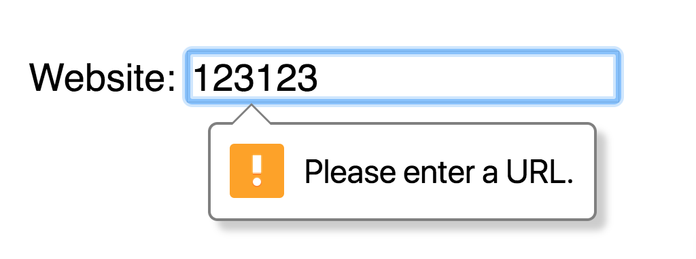
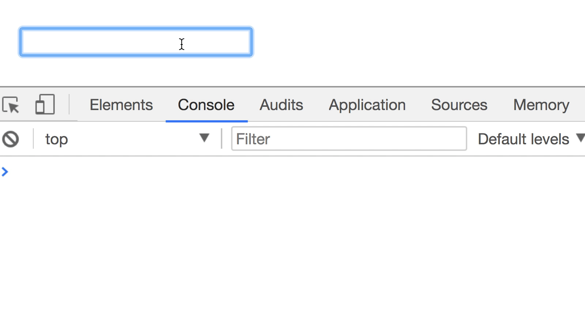
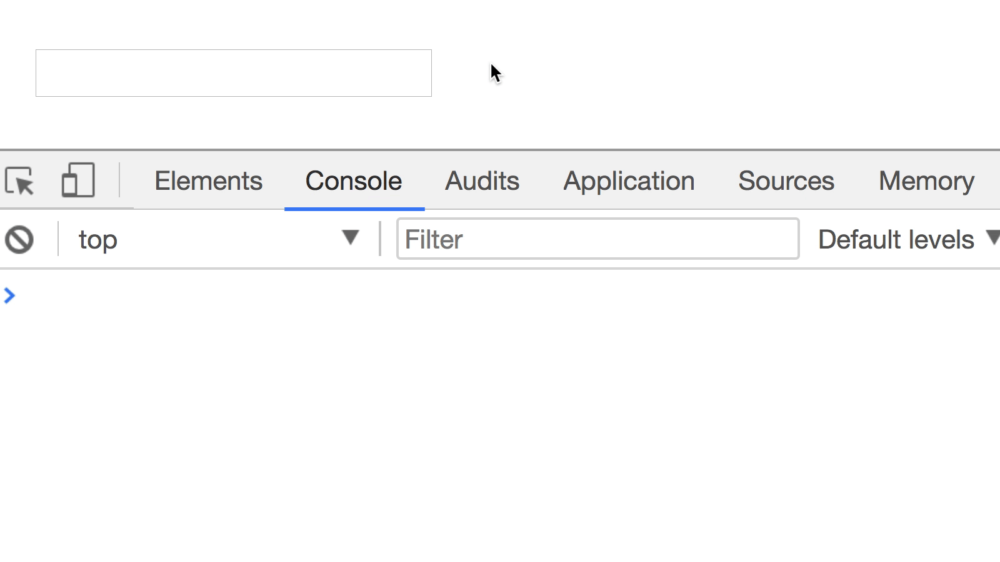
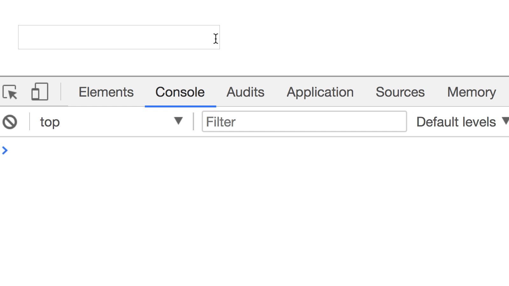
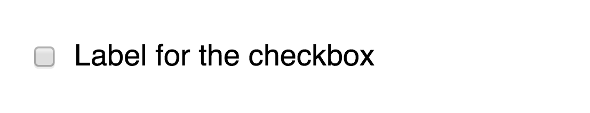
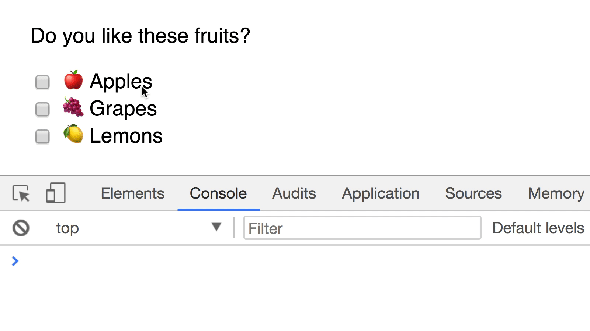
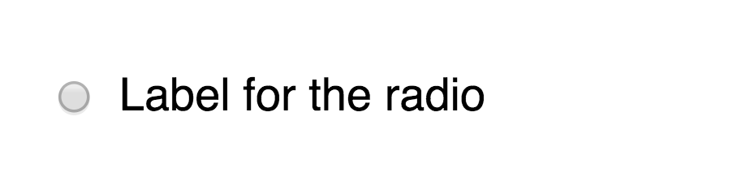
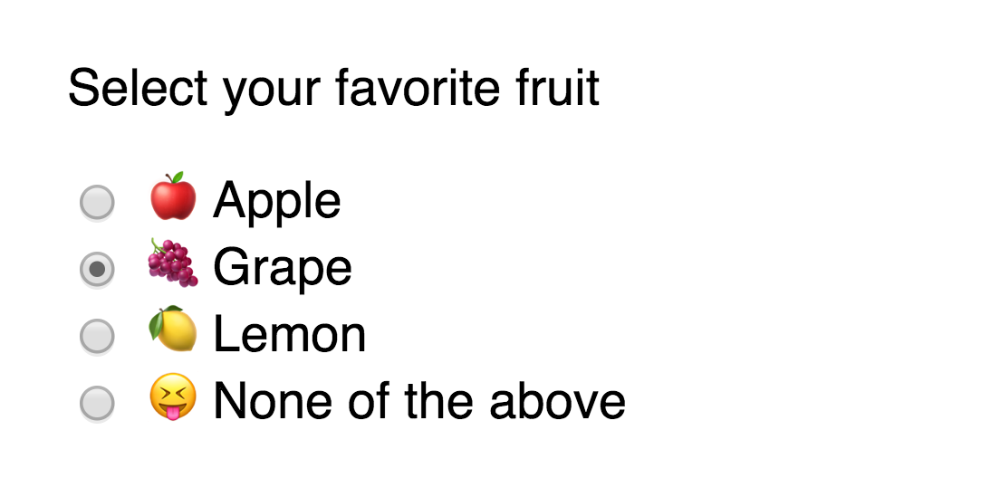

Other types of text-related input types that are well supported across browsers include:
Email
Number
Password
Tel
Search
Url
Different types of input gives you different effects. For example, if you set type="password", browsers will automatically hide the text entered by users:

Browsers validate urls automatically if type is set to url
You can safely use most input types to collect textual information. If a browser does not support the type you specified, it will revert to type="text" automatically.
You want to remove unnecessary whitespace from the start and end of the any value you obtain from a text field. To do so, you use the trim method that’s available for all strings.
You can listen to four types of events for input fields:
input
focus or focusin
blur or focusout
change
input fires whenever a user types information into the field.
input.addEventListener('input', e => {
console.log(e.target.value)
})

`input` fires whenever a user types information into the field
focus and focusin fires whenever a user activates a field, either by tabbing into it or by clicking on it. The difference between these two events is: focusin bubbles but focus doesn’t.
input.addEventListener('focus', e => {
console.log(`Focus on! Value is: ${e.target.value}`)
})

`focus` fires whenever a user activates a field
focusout and blur activate when a field loses focus. The difference between these two events is: focusout bubbles but blur doesn’t.
input.addEventListener('blur', e => {
console.log(`Focus off! Value is: ${e.target.value}`)
})

`blur` fires whenever a user leaves a field
change fires whenever a value is committed by a user. They’re often used for other types of form fields, like checkboxes, radio buttons and select elements. For a text field, change acts the same way as focusout or blur.
Checkboxes
You use checkboxes if you want to let users toggle between on and off states. To create a checkbox, you use an input element with type set to checkbox.
<input type="checkbox">
Example of a checkbox
Checkboxes require labels, or they wouldn’t make sense.
<input type="checkbox" name="checkbox" id="checkbox">
<label for="checkbox">Label for the checkbox</label>

You tell a user what the checkbox is for through a label
Checkboxes are often used in tandem with other checkboxes. When you use them this way, make sure you use different name attributes for each checkbox.
You can get the value of a checkbox with the value property.
<input type="checkbox" name="checkbox" id="checkbox" value="Have I been checked?">
<label for="checkbox">Label for the checkbox</label>
const checkbox = document.querySelector('input')
console.log(checkbox.value) // Have I been checked?
If value is not set, value will default to on.
<input type="checkbox" name="checkbox" id="checkbox">
<label for="checkbox">Label for the checkbox</label>
const checkbox = document.querySelector('input')
console.log(checkbox.value) // on
Selecting checked checkboxes
Checkboxes that are selected will have the checked attribute. You can select them through querySelector with the :checked pseudo class, through the checked property, or through the hasAttribute method.
You can listen to one event on checkboxes—change. change fires whenever a checkbox gets checked or unchecked. Note: you can use an event delegation pattern since change bubbles.
form.addEventListener('change', e => {
const checkbox = e.target
console.log(checkbox.checked)
})

`change` fires when a checkbox gets checked or unchecked
Radio buttons
Radio buttons are used when you want a user to select one option from many options. To create a radio button, you use an <input> element with type="radio".
<input type="radio">
A radio button
Like checkboxes, radio buttons require labels or they wouldn’t make sense.
<input type="radio" name="radio" id="radio">
<label for="radio">Label for the radio</label>

A radio button with a label
Radio buttons are always used together with other radio buttons. A single radio button doesn’t make sense. When you use multiple radio buttons, make sure all radio buttons have the same name property.
You will need a value attribute for every radio button if you want to pass the selected radio value to the backend.
You can get the value of a radio button with the value property. Note: You can use an event delegation pattern since change bubbles.
<input type="radio" name="radio" id="radio" value="The best (only) radio channel in the world">
<label for="radio">Label for the radio</label>
const radio = document.querySelector('input')
console.log(radio.value) // The best (only) radio channel in the world
The selected radio
The selected radio button will have the checked attribute. You can select it through querySelector with the :checked pseudo class, through the checked property or through the hasAttribute method.

Grape is selected
// Selecting checked radio through querySelector
const checkedRadios = document.querySelector('input:checked')
console.log(checkedRadios) // <input id="grape" name="grape" ... >
// Selecting checked radios through the checked property
const radios = Array.from(document.querySelectorAll('input'))
const radio = radios.find(radio => radio.checked)
console.log(radio) // <input id="grape" name="grape" ... >
// Getting the value of the seleced radio
const checkedRadio = document.querySelector('input[checked]')
const value = checkedRadio.value
console.log(value) // r1
// Get the value of the selected radio when the `change` event fires
document.addEventListener('change', ev => {
const checkedRadio = document.querySelector('input[checked]')
const value = checkedRadio.value
console.log(value)
})
Create a textarea
Get the value of the textarea when the input event occurs
Get the value of the textarea when the focus event occurs
Get the value of the textarea when focusout or blur events occur
<textarea> </textarea>
const textarea = document.querySelector('textarea')
textarea.addEventListener('input', ev => {
console.log(ev.target.value)
})
textarea.addEventListener('focus', ev => {
console.log(ev.target.value)
})
textarea.addEventListener('blur', ev => {
console.log(ev.target.value)
})